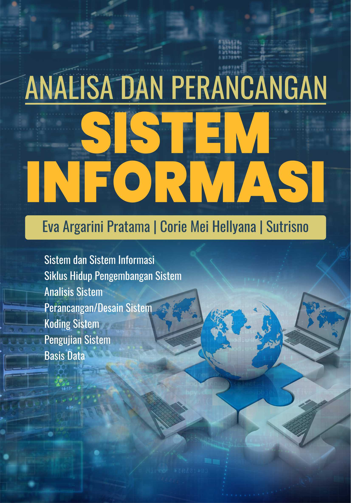
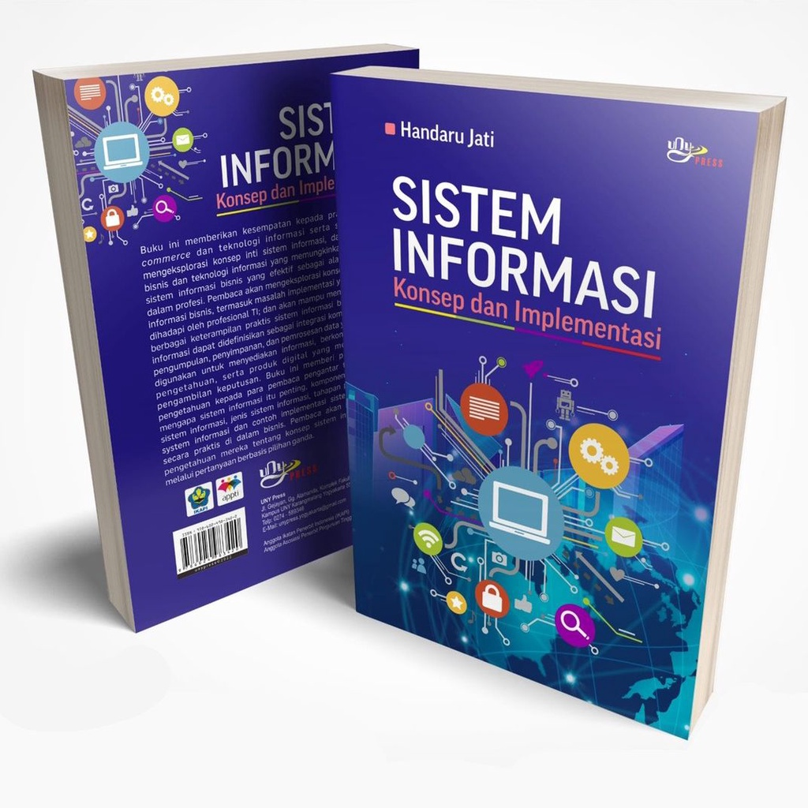

Sistem Informasi
Teknologi dan manusia saat ini menjadi satu kesatuan dan menjadi dua hal yang tidak dapat dipisahkan. Dimana, kedua faktor tersebut saling berkaitan dan dapat digabung menjadi sebuah sistem. Istilah populer untuk saat ini dinamakan dengan sistem informasi,
Berikut adalag buku tentang sistem informasi:


Kumpulan Buku